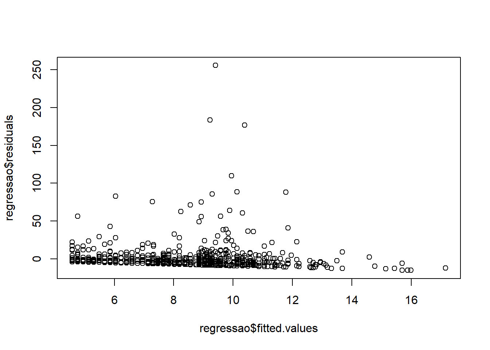
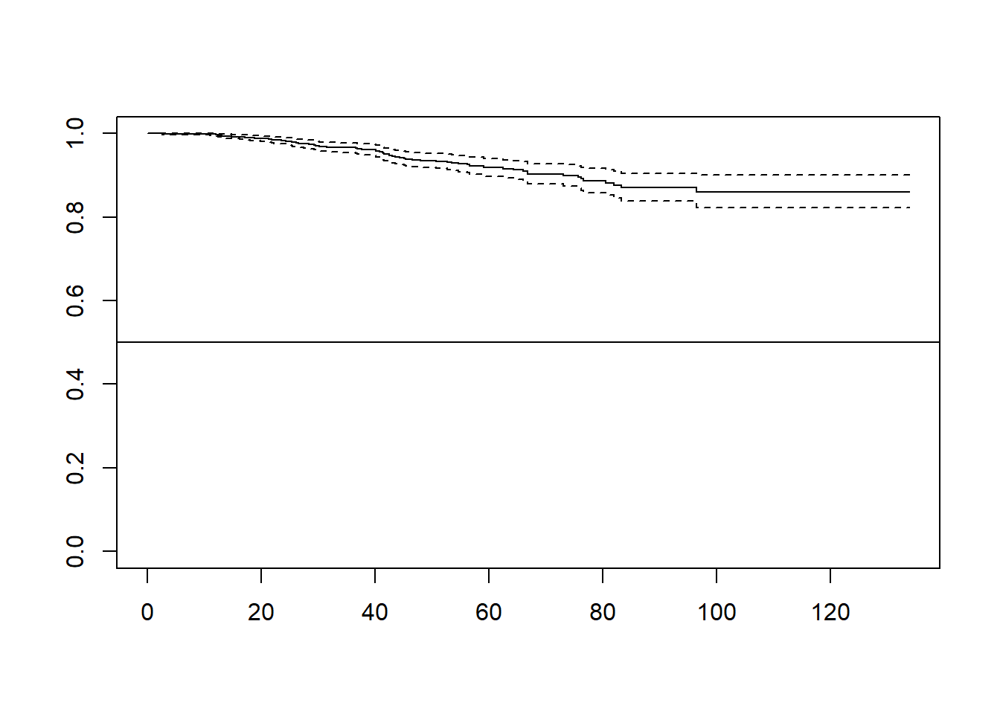
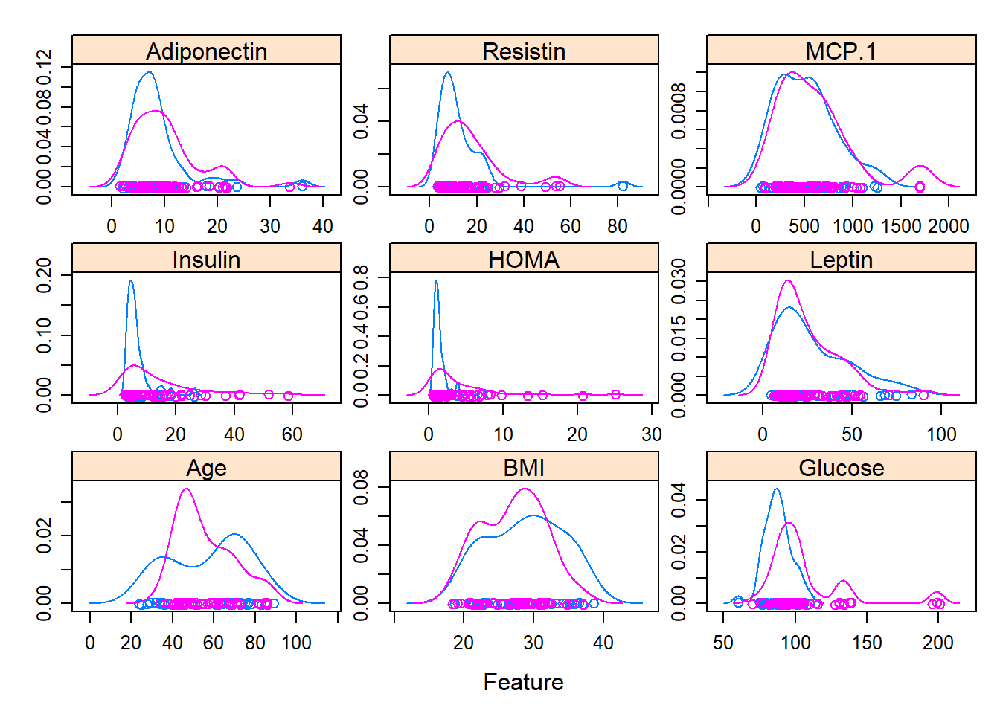
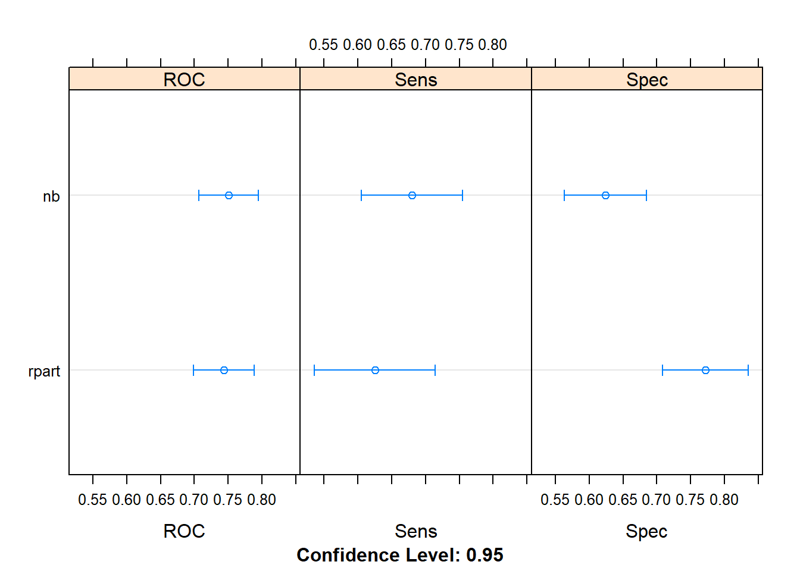
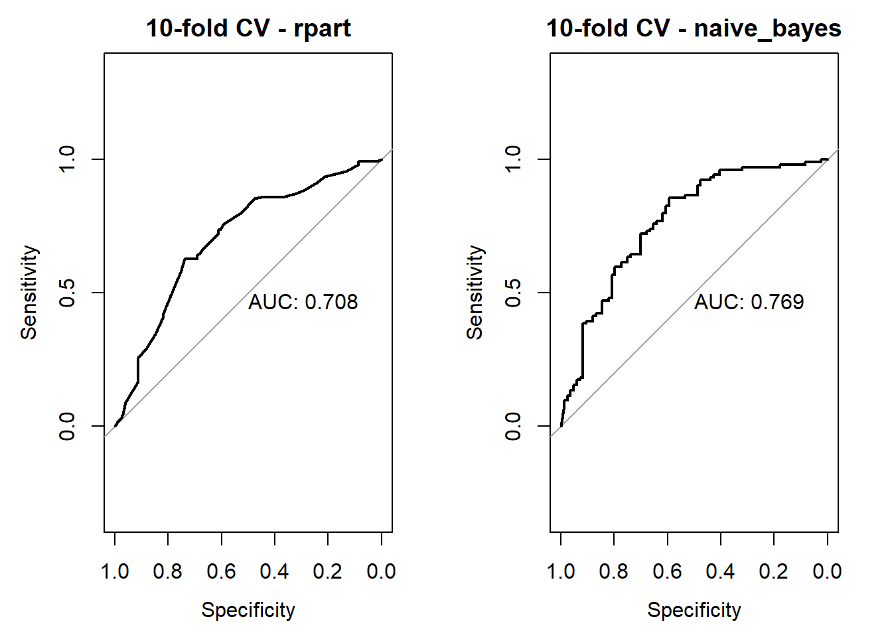
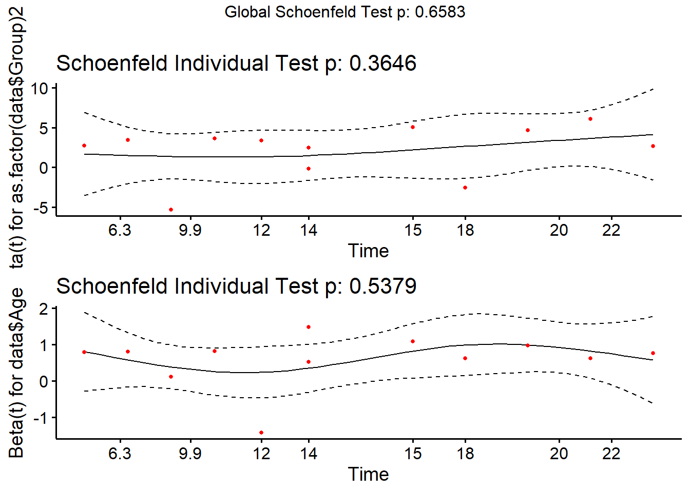
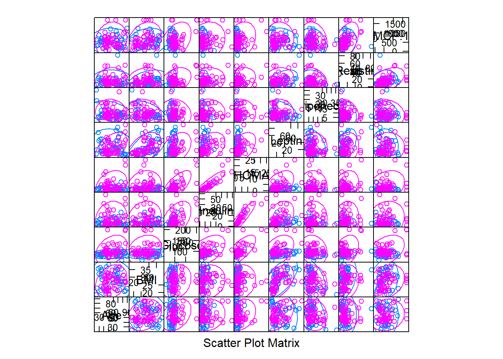

4.2 Lesson 2
2020-02-11
continuation of the previous classe. All the code was provided by the professor.
# loading and preparing the data
dataset <- read.csv("2.UploadedData/dataR2.csv")
# Define Classification as factor
dataset$Classification <- factor(dataset$Classification, levels=1:2, labels=c("Control", "Patient"))
# Holdout a validation set, by defining the indices of the training set
training.index <- createDataPartition(dataset$Classification, p=0.8, list=FALSE)
validation <- dataset[-training.index,]
dataset <- dataset[training.index,]Dimensions (should be 116 observations and 10 variables)
## [1] 94 104.2.1 Test harness
- Define the metric
metric <- "ROC"- Define the estimation method
control <- trainControl(...)- Train the model with chosen metric and method (output is factor with “Yes” or “No”)
fit.model <- train(output ~ ., data=dataset, method="nnet", metric=metric, trControl=control)- Plot ROC curve
plot.roc(fit.model$pred$obs,fit.model$pred$Yes, main=fit.model$method, print.auc=T)
4.2.1.1 Run algorithm using 20% hold-out validation
control <- trainControl(method="LGOCV", p=0.8, number=1,
summaryFunction=twoClassSummary,
classProbs=T,
savePredictions = TRUE)
set.seed(7)
fit.cart.hold <- train(Classification ~ ., data=dataset, method="rpart", metric=metric, trControl=control)
set.seed(7)
fit.nb.hold <- train(Classification ~ ., data=dataset, method="naive_bayes", metric=metric, trControl=control)Summarize accuracy of models
fit.models <- list(rpart=fit.cart.hold, nb=fit.nb.hold)
results <- resamples(fit.models)
summary(results)##
## Call:
## summary.resamples(object = results)
##
## Models: rpart, nb
## Number of resamples: 1
##
## ROC
## Min. 1st Qu. Median Mean 3rd Qu. Max. NA's
## rpart 0.5875 0.5875 0.5875 0.5875 0.5875 0.5875 0
## nb 0.7875 0.7875 0.7875 0.7875 0.7875 0.7875 0
##
## Sens
## Min. 1st Qu. Median Mean 3rd Qu. Max. NA's
## rpart 0.375 0.375 0.375 0.375 0.375 0.375 0
## nb 0.875 0.875 0.875 0.875 0.875 0.875 0
##
## Spec
## Min. 1st Qu. Median Mean 3rd Qu. Max. NA's
## rpart 0.8 0.8 0.8 0.8 0.8 0.8 0
## nb 0.5 0.5 0.5 0.5 0.5 0.5 0ROC curves for models
par(mfrow=c(1,2))
rocs <- lapply(fit.models, function(fit){plot.roc(fit$pred$obs,fit$pred$Patient, main=paste("20% Hold-out -",fit$method), debug=F, print.auc=T)})
Compare accuracy of models

4.2.1.2 Run algorithm using multiple 20% hold-out validation
control <- trainControl(method="LGOCV", p=0.8, number=25,
summaryFunction=twoClassSummary,
classProbs=T,
savePredictions = TRUE)
set.seed(7)
fit.cart.mhold <- train(Classification ~ ., data=dataset, method="rpart", metric=metric, trControl=control)
set.seed(7)
fit.nb.mhold <- train(Classification ~ ., data=dataset, method="naive_bayes", metric=metric, trControl=control)Summarize accuracy of models
fit.models <- list(rpart=fit.cart.mhold, nb=fit.nb.mhold)
results <- resamples(fit.models)
summary(results)##
## Call:
## summary.resamples(object = results)
##
## Models: rpart, nb
## Number of resamples: 25
##
## ROC
## Min. 1st Qu. Median Mean 3rd Qu. Max. NA's
## rpart 0.36875 0.54375 0.600 0.61425 0.6625 0.91875 0
## nb 0.48750 0.66250 0.725 0.73300 0.8000 0.95000 0
##
## Sens
## Min. 1st Qu. Median Mean 3rd Qu. Max. NA's
## rpart 0.125 0.375 0.500 0.565 0.75 1 0
## nb 0.375 0.625 0.625 0.660 0.75 1 0
##
## Spec
## Min. 1st Qu. Median Mean 3rd Qu. Max. NA's
## rpart 0.4 0.5 0.7 0.660 0.8 1.0 0
## nb 0.4 0.5 0.7 0.616 0.7 0.8 0ROC curves for models
par(mfrow=c(1,2))
rocs <- lapply(fit.models, function(fit){plot.roc(fit$pred$obs,fit$pred$Patient, main=paste("25 x 20% Hold-out -",fit$method), debug=F, print.auc=T)})Compare accuracy of models

4.2.1.3 Run algorithm using 10-fold cross validation
control <- trainControl(method="cv", number=10,
summaryFunction=twoClassSummary,
classProbs=T,
savePredictions = TRUE, repeats = 1)
set.seed(7)
fit.cart.cv <- train(Classification ~ ., data=dataset, method="rpart", metric=metric, trControl=control)
set.seed(7)
fit.nb.cv <- train(Classification ~ ., data=dataset, method="naive_bayes", metric=metric, trControl=control)Summarize accuracy of models
fit.models <- list(rpart=fit.cart.cv, nb=fit.nb.cv)
results <- resamples(fit.models)
summary(results)##
## Call:
## summary.resamples(object = results)
##
## Models: rpart, nb
## Number of resamples: 10
##
## ROC
## Min. 1st Qu. Median Mean 3rd Qu. Max. NA's
## rpart 0.225 0.50625 0.6291667 0.5916667 0.69375 0.8 0
## nb 0.550 0.66250 0.8250000 0.7880000 0.89500 1.0 0
##
## Sens
## Min. 1st Qu. Median Mean 3rd Qu. Max. NA's
## rpart 0.25 0.25 0.55 0.535 0.7500 1 0
## nb 0.40 0.50 0.75 0.715 0.9375 1 0
##
## Spec
## Min. 1st Qu. Median Mean 3rd Qu. Max. NA's
## rpart 0.0 0.6166667 0.7333333 0.7133333 0.95 1 0
## nb 0.2 0.4500000 0.6333333 0.6300000 0.80 1 0ROC curves for models
par(mfrow=c(1,2))
rocs <- lapply(fit.models, function(fit){plot.roc(fit$pred$obs,fit$pred$Patient, main=paste("10-fold CV -",fit$method), debug=F, print.auc=T)})
Compare accuracy of models

4.2.1.4 Run algorithm using 25 times 10-fold cross validation
control <- trainControl(method="repeatedcv", number=10,
summaryFunction=twoClassSummary,
classProbs=T,
savePredictions = TRUE, repeats = 25)
set.seed(7)
fit.cart.rcv <- train(Classification ~ ., data=dataset, method="rpart", metric=metric, trControl=control)
set.seed(7)
fit.nb.rcv <- train(Classification ~ ., data=dataset, method="naive_bayes", metric=metric, trControl=control)Summarize accuracy of models
fit.models <- list(rpart=fit.cart.rcv, nb=fit.nb.rcv)
results <- resamples(fit.models)
summary(results)##
## Call:
## summary.resamples(object = results)
##
## Models: rpart, nb
## Number of resamples: 250
##
## ROC
## Min. 1st Qu. Median Mean 3rd Qu. Max. NA's
## rpart 0.125 0.5175 0.6200000 0.6062067 0.70 0.9583333 0
## nb 0.250 0.6850 0.7916667 0.7721933 0.88 1.0000000 0
##
## Sens
## Min. 1st Qu. Median Mean 3rd Qu. Max. NA's
## rpart 0.00 0.25 0.50 0.5050 0.75 1 0
## nb 0.25 0.50 0.75 0.7052 0.80 1 0
##
## Spec
## Min. 1st Qu. Median Mean 3rd Qu. Max. NA's
## rpart 0 0.6 0.6666667 0.6892 0.8 1 0
## nb 0 0.5 0.6000000 0.6168 0.8 1 0ROC curves for models
par(mfrow=c(1,2))
rocs <- lapply(fit.models, function(fit){plot.roc(fit$pred$obs,fit$pred$Patient, main=paste("25 x 10-fold CV -",fit$method), debug=F, print.auc=T)})
Compare accuracy of models
4.2.1.5 Run algorithm using leave-one-out validation
control <- trainControl(method="LOOCV",
summaryFunction=twoClassSummary,
classProbs=T,
savePredictions = TRUE)
set.seed(7)
fit.cart.loo <- train(Classification ~ ., data=dataset, method="rpart", metric=metric, trControl=control)
set.seed(7)
fit.nb.loo <- train(Classification ~ ., data=dataset, method="naive_bayes", metric=metric, trControl=control)Summarize accuracy of models
fit.models <- list(rpart=fit.cart.loo, nb=fit.nb.loo)
#results <- resamples(fit.models)
#summary(results)
summary(fit.models)## Length Class Mode
## rpart 23 train list
## nb 23 train listROC curves for models
par(mfrow=c(1,2))
rocs <- lapply(fit.models, function(fit){plot.roc(fit$pred$obs,fit$pred$Patient, main=paste("Leave-One-Out -",fit$method), debug=F, print.auc=T)})
Compare accuracy of models

4.2.1.6 Run algorithm using bootstrap validation
control <- trainControl(method="boot_all", number=25,
summaryFunction=twoClassSummary,
classProbs=T,
savePredictions = TRUE)
set.seed(7)
fit.cart.boot <- train(Classification ~ ., data=dataset, method="rpart", metric=metric, trControl=control)
set.seed(7)
fit.nb.boot <- train(Classification ~ ., data=dataset, method="naive_bayes", metric=metric, trControl=control)Summarize accuracy of models
fit.models <- list(rpart=fit.cart.boot, nb=fit.nb.boot)
results <- resamples(fit.models)
summary(results)##
## Call:
## summary.resamples(object = results)
##
## Models: rpart, nb
## Number of resamples: 25
##
## ROC
## Min. 1st Qu. Median Mean 3rd Qu. Max. NA's
## rpart 0.4638158 0.5634921 0.6458333 0.6268948 0.6898496 0.7913043 0
## nb 0.5986842 0.6805556 0.7189542 0.7278811 0.7647059 0.8655462 0
##
## Sens
## Min. 1st Qu. Median Mean 3rd Qu. Max. NA's
## rpart 0.3846154 0.5294118 0.6250 0.6090791 0.7222222 0.7857143 0
## nb 0.4666667 0.7692308 0.8125 0.8148761 0.8571429 1.0000000 0
##
## Spec
## Min. 1st Qu. Median Mean 3rd Qu. Max. NA's
## rpart 0.375 0.5652174 0.6470588 0.6466178 0.7222222 0.8571429 0
## nb 0.250 0.4000000 0.4500000 0.4614179 0.5238095 0.7142857 0ROC curves for models
par(mfrow=c(1,2))
rocs <- lapply(fit.models, function(fit){plot.roc(fit$pred$obs,fit$pred$Patient, main=paste("25 x Bootstrap -",fit$method), debug=F, print.auc=T)})
Compare accuracy of models

4.2.2 Make predictions
Estimate skill of GLM Step AIC on the validation dataset
par(mfrow=c(1,1))
predictions.prob <- predict(fit.nb.boot, validation, type="prob")
predictions <- predict(fit.nb.boot, validation, type="raw")
confusionMatrix(predictions, validation$Classification)## Confusion Matrix and Statistics
##
## Reference
## Prediction Control Patient
## Control 10 10
## Patient 0 2
##
## Accuracy : 0.5455
## 95% CI : (0.3221, 0.7561)
## No Information Rate : 0.5455
## P-Value [Acc > NIR] : 0.586899
##
## Kappa : 0.1538
##
## Mcnemar's Test P-Value : 0.004427
##
## Sensitivity : 1.0000
## Specificity : 0.1667
## Pos Pred Value : 0.5000
## Neg Pred Value : 1.0000
## Prevalence : 0.4545
## Detection Rate : 0.4545
## Detection Prevalence : 0.9091
## Balanced Accuracy : 0.5833
##
## 'Positive' Class : Control
## 